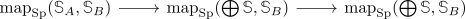
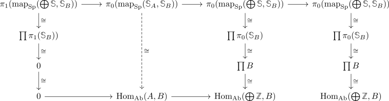

fully faithful moore spectrum functor for abelian groups away from 2 to hSp
Proposition
Let $\mathrm{Mod}_{\mathbb{Z}[\frac{1}{2}]$ be the category of abelian groups where $\cdot 2$ is an isomorphism Then there exists a fully faithful functor
Proof
Let $\mathrm{hSp}_{\textrm{moore}, \frac{1}{2}}$ be the full subcategory containing moore spectra such that $2$ is invertible. Then we claim that the functor $H_0(-,\mathbb{Z}): \mathrm{hSp}_{\textrm{moore}, \frac{1}{2}} \rightarrow \mathrm{Mod}_{\mathbb{Z}[\frac{1}{2}}$ is an equivalence or fully faithful and essentially surjective If we manage to show that it is an equivalence, then we have a functor $\mathrm{Mod}_{\mathbb{Z}[\frac{1}{2}} \rightarrow \mathrm{hSp}_{\textrm{moore}, \frac{1}{2}} \hookrightarrow \mathrm{hSp}$, which is a composition of two fully faithful functors.
It is essentially surjective by existence and uniqueness of a moore spectra so it remains to show that it is fully faithful. Let $A,B$ be abelian groups and $\mathbb{S}_A, \mathbb{S}_B$ be their respective moore spectra.
Let $\bigoplus \mathbb{S} \rightarrow \bigoplus \mathbb{S} \rightarrow \mathbb{S}_{A}$ be a presentation (cf. existence of moore spectra). Then we have a cofiber sequence

which gives a long exact sequence

where we have used
- moore spectrum for 2-local group has vanishing pi_1
- homotopy group functor preserves products
- the term $\mathrm{Hom}_{\mathrm{Ab}}(A, B)$ must be the kernel, since the sequence is exact.